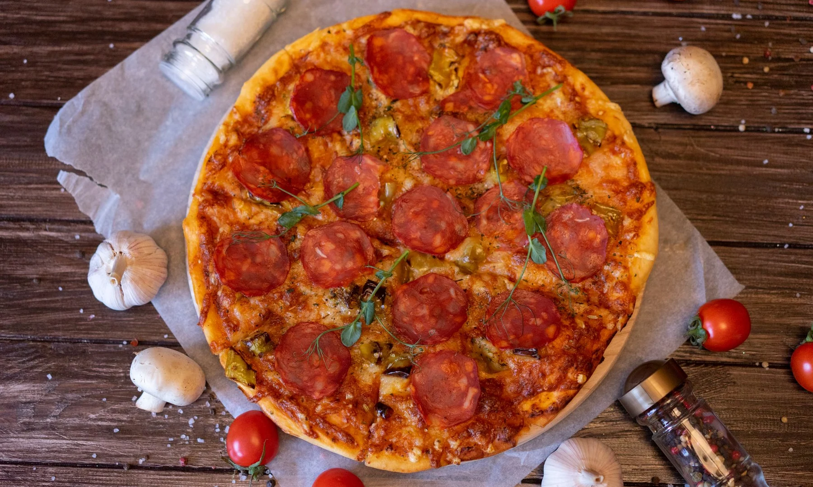
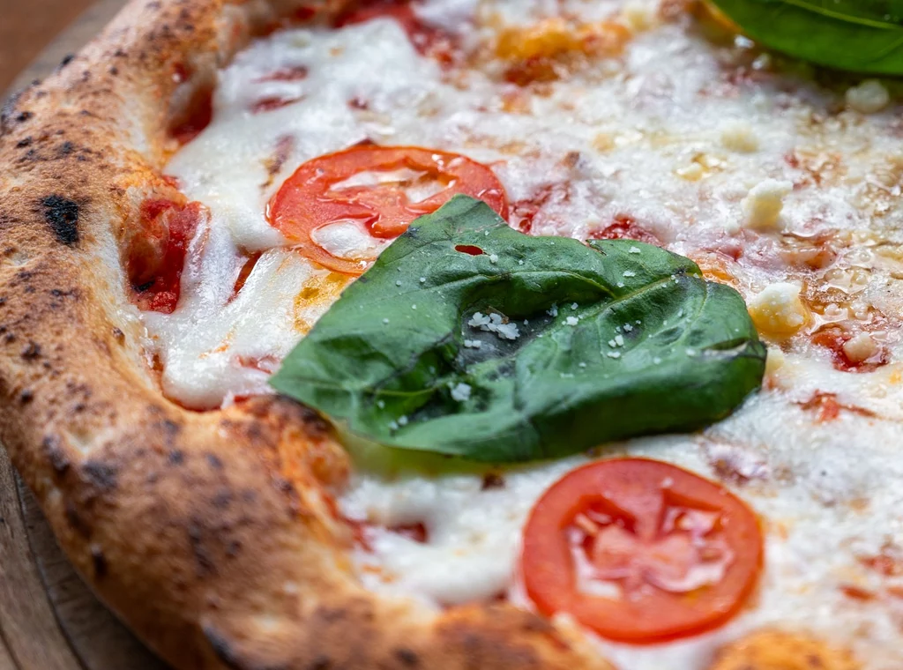
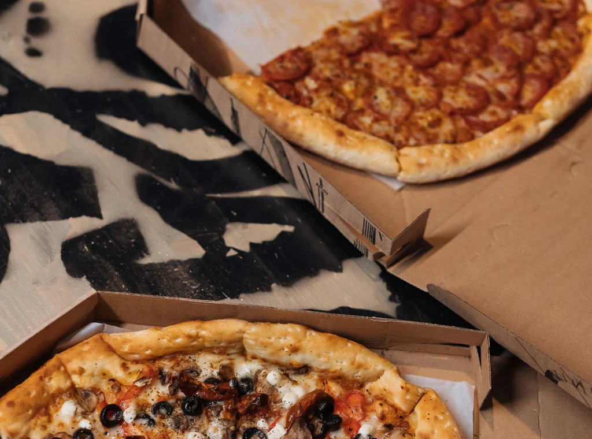

Pizza Club Caffe
- Adresă
- Strada Petru Rareș 4, Târgu Neamț
- Program
- Confirmă telefonic
- Telefon
- +40 751 372 563

Concept de site · fotografii ilustrative
Pizza de la vitrină și pizza pentru livrare.

Întreabă la vitrină ce sortimente sunt disponibile în ziua vizitei.
La cerere
Sună pentru sortimente, mărimi, prețuri și adresa la care se poate livra.
La cerereSortimentele se pot vedea în vitrină, pe Petru Rareș. Pentru o comandă sau pentru livrare, sună și întreabă ce este disponibil în ziua aceea.